CSE 513 · Ders 1: Processes and threads (birleşik anlatım)#
Bölümler
- 0. Temeller: donanım ve çalıştırma ortamı
- 1. Tazeleme: soyutlamalar, modlar, çekirdeğe giriş
- 2. Program, process, adres alanı, PCB
- 3. Durumlar, kuyruklar, CPU ve I/O burst'leri
- 4. Context switch ve "kernel entry ≠ task switch"
- 5. fork / exec / wait, zombie, ps
- 6. Thread'ler, concurrency, race, join
- 7. IPC ve pipe
- 8. Uçtan uca
- Ek: Ubuntu'da denenecek küçük deneyler (önce tahmin et, sonra çalıştır; sl. 63)
Hazırlık 2026-11-02. Dört uzman ajanın notları (çekirdek/mimari, süreç/thread, Linux/C, sınav) birleştirildi. Denetçinin bulguları (D-01…D-09) düzeltildi. 2026-11-03'te dört uzmanlı ikinci bir inceleme (slayt kapsamı, okuma, sınav simülasyonu, doğruluk) yapıldı ve bulguları işlendi.
Ders materyalleri (hocanın sitesine en son 2026-11-03'te bakıldı; aşağıdaki dosyaların hepsi yerel kopyayla bayt bayt aynı çıktı). Yerel yollar materyaller/ altındadır, kısaltma: D01/ = Ders-01_Processes-and-threads/.
- Ders sayfası: lecture-01.html →
_site-kopyasi/lecture-01.html. Konu: "What happens when a program runs?", 1. hafta. - Okuma kitapçığı: lecture-01-reading.html →
_site-kopyasi/lecture-01-reading.html; PDF hâliD01/CSE513-Lecture01-Okuma.pdf. Şekiller_site-kopyasi/booklets/lecture01/. - Slaytlar (65 slayt): CSE513-Lecture01.pdf →
D01/CSE513-Lecture01.pdf. - OSTEP bölümleri (okumanın bağlantı verdiği):
- Ch. 4 The Abstraction: The Process →
D01/OSTEP/cpu-intro.pdf - Ch. 5 Interlude: Process API →
D01/OSTEP/cpu-api.pdf - Ch. 6 Mechanism: Limited Direct Execution →
D01/OSTEP/cpu-mechanisms.pdf - Ch. 13 The Abstraction: Address Spaces →
D01/OSTEP/vm-intro.pdf - Ch. 26 Concurrency: An Introduction →
D01/OSTEP/threads-intro.pdf - Ch. 27 Interlude: Thread API →
D01/OSTEP/threads-api.pdf - OSC 10e, Bölüm 1–4 (ders sayfası: "selected sections rather than every slide"): resmî slaytlar, ch1, ch2, ch3, ch4 →
D01/OSC-10-slaytlar/ch1.pptx…ch4.pptx. - Kod: launch.c →
D01/kod/launch.c; thread_join.c →D01/kod/thread_join.c. - İzlenmesi zorunlu video (okumanın 15. bölümü "Must watch video": "Required viewing for Week 1"): 1963 Timesharing: A Solution to Computer Bottlenecks, Fernando J. Corbató'nun yer aldığı MIT filmi. Yerel kopya yok. Hocanın izlerken sorduğu üç soru ve cevapları §3.3'te. Hocanın sitesinde dersin tamamı için verilen tek zorunlu izleme bu: 2–4. haftaların okumaları "izleme yok" diyor, 5. haftanınki hiç anmıyor (2026-11-03'te bakıldı).
- Okumanın verdiği man sayfaları: fork(2), execve(2), waitpid(2), ps(1), pthread_join(3), pipe(7).
Sınav düzeni sl. 3–4: dersler 1–6. ve 8–10. haftalarda. Ara sınav 7. hafta (%30), final %40, sunum %15, ödevler %15. Final sorularının yarısı sunumlardan gelir, öbür yarısı derslerden. 11–14. haftalar İngilizce makale sunumları (15 dakika). Ödevler yaklaşık iki haftada bir, Ubuntu odaklı; yapay zekâ yardımı serbest.
Son gün rotası: İngilizce özet sayfası → §3.2 izler → §4.2 Case A/B/C → §5.5 launch.c → §6.4–6.5 lost update ve join → §8.1–8.3 uçtan uca → sl. 64 karşıtlıkları (§8.4).
Kaynak etiketleri:
- sl. N: hocanın slaytı (birinci kaynak).
- Okuma §N: okuma kitapçığının bölümü. [S-N]: okumanın 12. bölümündeki çalışılmış soru.
- OSC chX, OSTEP: ikincil kaynaklar.
- ek bilgi: kaynaklarda yok, genel bilgi.
Hocanın bütün derse yayılan yöntemi şu: davranışı yürütme durumu, kaynak sahipliği ve bağımlılık cinsinden açıkla. Önce tahmin et. Sonra cevabı geçerli kılan varsayımları söyle. Slaytların çoğu "X, Y'yi kanıtlamaz" kalıbında. Ölçülen beceri, gözlem ile çıkarımı ayırmak.
Dersin üç sorusu sl. 2:
- Birçok program tek makineyi nasıl paylaşır?
- Yürütme el değiştirince ne saklanmalı?
- Hangi kaynaklar paylaşılır, paylaşımı ne güvenli kılar?
0. Temeller: donanım ve çalıştırma ortamı#
Emre'nin isteğiyle eklendi; hocanın slaytında yok. Kaynak: OSC ch1–2 ve OSTEP 4.
0.1 Bilgisayarın parçaları: CPU, bus, device controller, bellek OSC ch1 sl. 12–13, 57#
Bir ya da daha çok CPU ve device controller'lar ortak bir bus üzerinden paylaşılan belleğe erişir. CPU ile cihazlar eşzamanlı çalışır. Her controller'ın yerel bir tamponu vardır, OS tarafında da her controller tipi için bir device driver bulunur OSC ch1 sl. 13. Komutlar ve veri aynı bellekte durur (von Neumann).

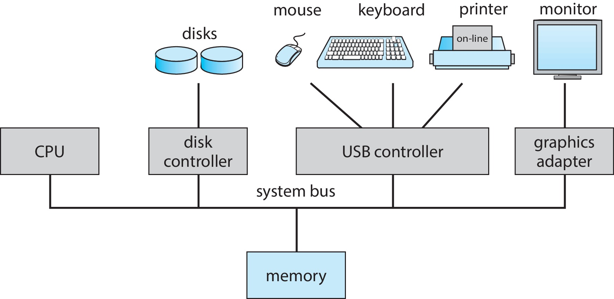

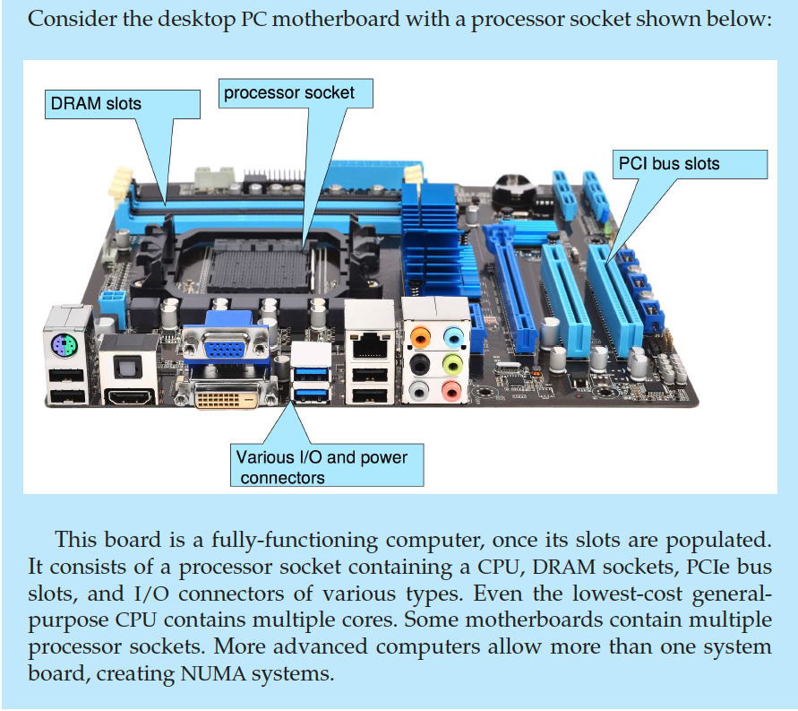
Fotoğrafı şemayla eşleştir OSC ch1 sl. 57:
| Fotoğrafta | Şemada | Not |
|---|---|---|
| processor socket | CPU | Takılan işlemci birden çok çekirdek içerir. |
| DRAM slots | memory | Ana bellek modülleri buraya takılır. |
| PCI(e) bus slots | graphics adapter gibi controller'lar | Ek kartlar (ekran kartı, ağ kartı) buradan bus'a bağlanır. |
| arka paneldeki I/O konnektörleri (USB, ağ, ses, ekran) | USB controller, graphics adapter | Konnektör cihazın takıldığı yer; onu süren controller kartın üzerindedir. |
Fotoğrafta "system bus" diye tek bir kablo göremezsin. Bus, kartın içindeki bakır yollardan ve yongalardan oluşur. Modern kartlarda tek ortak bus yerine noktadan noktaya bağlantılar (PCIe hatları gibi) var; şema mantıksal resimdir ek bilgi. Bazı kartlarda birden çok işlemci soketi bulunur; birden çok kartı birleştiren daha büyük sistemler NUMA'ya götürür OSC ch1 sl. 54, 57.
"Ortak bir bus üzerinden paylaşılan belleğe erişir" ne demek? OSC ch1 sl. 12 Cümlenin üç parçası var:
- Bus: parçaların bağlı olduğu ortak iletişim hattı. Adres hatları hangi bellek konumunu, veri hatları taşınan değeri, kontrol hatları okuma mı yazma mı olduğunu taşır. Herkes aynı hattı kullanır, ama bir anda bir taraf konuşur ek bilgi.
- Device controller: CPU cihazı doğrudan sürmez. Her cihazın başında register'ları (komut, durum, veri) ve yerel tamponu olan bir controller vardır. Driver bu register'lara yazarak iş verir, cihazı controller sürer OSC ch1 sl. 13.
- Paylaşılan bellek: tek bir ana bellek (RAM) var. CPU komut ve veriyi oradan okur. Controller da bloğu CPU'ya uğramadan oraya yazabilir (DMA).
Modern bir anakartta bus'ı gözle göremezsin. Eski bilgisayarlarda ise hem bus hem controller ayrı bir parça olarak görünüyordu:

.jpg){kind=link}
![Bir device controller: IBM PC/XT için Western Digital WD1002S-WX2 sabit disk controller kartı (1984). İki ucu var: alttaki altın uçlar (P1) bilgisayarın 8 bitlik bus yuvasına takılır, üstteki konnektörlere (J1–J3) diskin kabloları bağlanır. Controller bus ile cihazın arasında durur. Kartın üzerinde kendi controller yongaları (WD1010, WD11C00), 2 KB'lık bir statik RAM (U5, NEC D4016C; yerel tampon görevi görür) ve kendi küçük programını taşıyan etiketli bir EPROM (U14) var (ek bilgi). Bugün controller çoğunlukla cihazın kendi üzerindedir; aşağıdaki SSD fotoğrafındaki controller yongası buna örnektir. Fotoğraf: Mister rf, CC BY-SA 4.0, Wikimedia Commons.](img/foto/controller-wd1002.jpg)

Tuzak: driver ile controller farklı şeylerdir. Driver kernel'deki yazılımdır, controller cihazın başındaki donanımdır. Driver controller'ın register'larıyla konuşur, cihazı controller sürer OSC ch1 sl. 13.
0.2 I/O: komut, interrupt ve DMA OSC ch1 sl. 12–19, 28#
0.1'deki resmin sonucunu OSC aynı slaytta söylüyor OSC ch1 sl. 12: "concurrent execution of CPUs and devices competing for memory cycles". CPU ile cihazlar eşzamanlı çalışır ve aynı belleğe gittikleri için bellek döngüsü için yarışırlar. Bu düzen multiprogramming'i mümkün kılar: veri controller ile bellek arasında taşınırken CPU başka bir process'i çalıştırabilir.
Adım adım:
- Driver controller'a işi verir, controller cihazı sürer, iş bitince bir interrupt ile CPU'ya haber verir.
- Interrupt kontrolü interrupt vector'daki servis rutinine aktarır. Kesilen komutun adresi ve register'lar kaydedilir.
- Polling, CPU'nun cihazı sürekli yoklamasıdır; interrupt'ta CPU beklerken başka iş yapar.
- DMA: controller veri bloğunu CPU'ya uğramadan belleğe taşır, blok başına tek bir interrupt gelir.
Tuzak: buradaki "shared memory", Bölüm 7'deki IPC yöntemi değildir. Burada paylaşılan şey donanımdaki fiziksel RAM'dir; Bölüm 7'de iki process kendi adres alanlarına aynı bölgeyi eşler.
0.3 CPU: komut döngüsü, register'lar, stack#

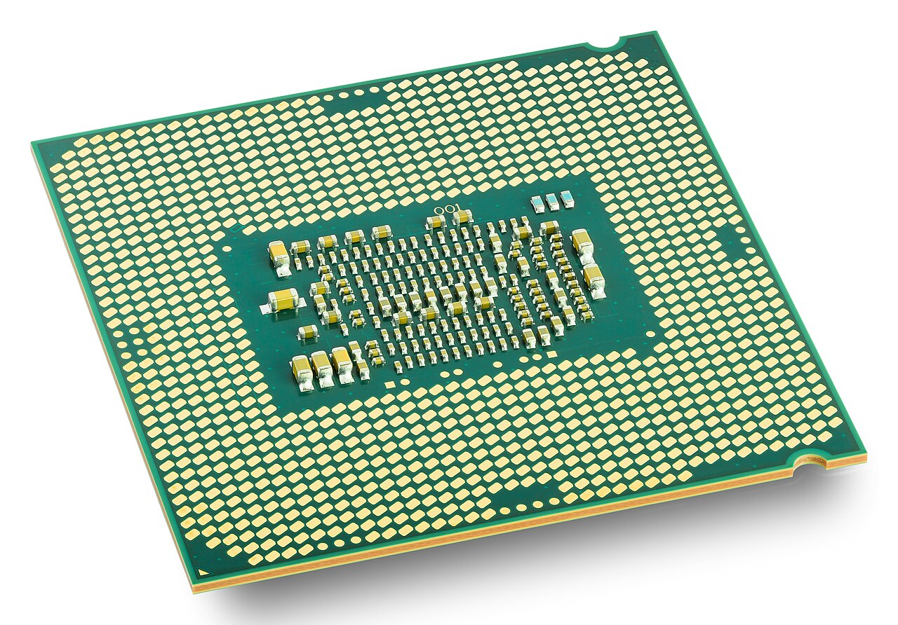

- CPU'nun döngüsü ek bilgi: fetch → decode → execute. PC'nin gösterdiği komut getirilir, çözülür, çalıştırılır ve PC ilerler. Register'lar CPU içindeki en hızlı depolardır. Özel olanlar: PC (sıradaki komut), SP (stack'in tepesi), flags/status. OSTEP'e göre bir process'in "makine durumu" (machine state) bellekten (adres alanı), register'lardan (PC ve SP dahil) ve I/O bilgisinden (açık dosyalar) oluşur OSTEP 4.1. Hoca da PCB'de açık dosyaları sayar (sl. 14).
- Stack ve çağrı çerçevesi ek bilgi:
calldönüş adresini stack'e koyar. Fonksiyonun yerel değişkenleri ve kaydedilen register'lar bir çerçevede (stack frame) durur,retile çerçeve bırakılır. Yerel değişkenin ömrünün kapsamla bitmesi buradan gelir (sl. 13).
0.4 Bellek hiyerarşisi ve cache OSC ch1 sl. 21–26, 41–43#
Register → cache → ana bellek (DRAM) → SSD/HDD. Yukarı çıktıkça hızlanır, küçülür ve pahalılaşır. Caching, veriyi daha hızlı bir katmana kopyalamaktır. CPU'nun doğrudan erişebildiği tek büyük depolama ana bellektir. Bölüm 4'teki context switch'in "dolaylı maliyeti" bu cache'in ve adres çevirilerinin (TLB) soğumasıdır (sl. 22–23: "caches and translations").

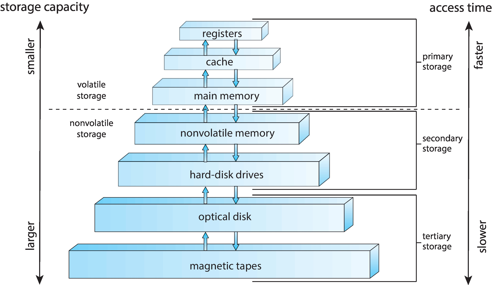
Caching OSC ch1 sl. 41–43: kullanılan bilgi geçici olarak yavaş katmandan hızlı katmana kopyalanır. Önce bilginin hızlı katmanda olup olmadığına bakılır. Varsa oradan kullanılır, yoksa alt katmandan kopyalanır. Bu taşımayı her katmanda başka biri yönetir; aşağıdaki tablonun "Managed by" satırına bak: register'ları derleyici, cache'i donanım, ana bellek ve diskleri OS yönetir.

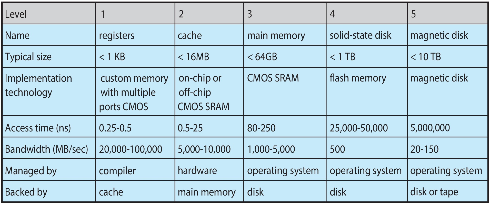

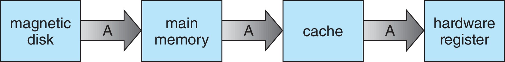
Hiyerarşinin katları gerçek donanımda ek bilgi. Register'lar ve cache ayrı bir parça değildir, yukarıdaki işlemcinin metal kapağının altındaki silikon yongadadır.
![Register ve cache'in bulunduğu yer: bir Intel Core i7-6700 (Skylake) işlemcinin kapağı açılmış silikon yongası, mikroskopla çekilmiş. Yukarıdaki i7-6700K ile aynı yongadır. Boyutu yaklaşık 13 × 9 mm'dir. Çekirdekler, her çekirdeğin register'ları ve cache'ler hep bu tek parçanın üzerindedir. Register'lar çekirdeklerin içinde çok küçük bir alan tutar, gözle seçilmez. Cache, SRAM hücrelerinden oluştuğu için çoğunlukla düzenli bir ızgara gibi tekrar eden bloklar olarak görünür. Bölgelerin kesin yerini burada işaretlemiyorum, çünkü bu fotoğrafta etiket yok. Renkler gerçek değildir, ışıklandırma ve fotoğraf işlemesinden gelir (ek bilgi). Fotoğraf: Fritzchens Fritz, CC0, Wikimedia Commons.](img/foto/yonga-skylake.jpg)
.jpg){kind=link}
![Cache'in ayrı bir parça olduğu zamanlar: bir Intel Pentium II 400 MHz (1998) işlemcisinin plastik kartuşu çıkarılmış kartı. Ortadaki U1 işlemcidir; ortasındaki mavi kare silikon yongadır. Sağdaki iki NEC yongası (U2, U3) L2 cache'tir: toplam 512 KB'lık SRAM. Cache burada işlemcinin hemen yanında ama ayrı yongalarda duruyor ve işlemcinin yarı hızında çalışıyordu. Sonraki işlemcilerde L2 cache yonganın içine alındı, bu yüzden bugün yukarıdaki Skylake fotoğrafında olduğu gibi ayrı görünmez. Hiyerarşinin mantığı ise aynı kaldı: işlemciye yakın, küçük ve hızlı bir kopya (ek bilgi). Fotoğraf: Denniss, CC BY-SA 2.5, Wikimedia Commons.](img/foto/cache-pentium2.jpg)


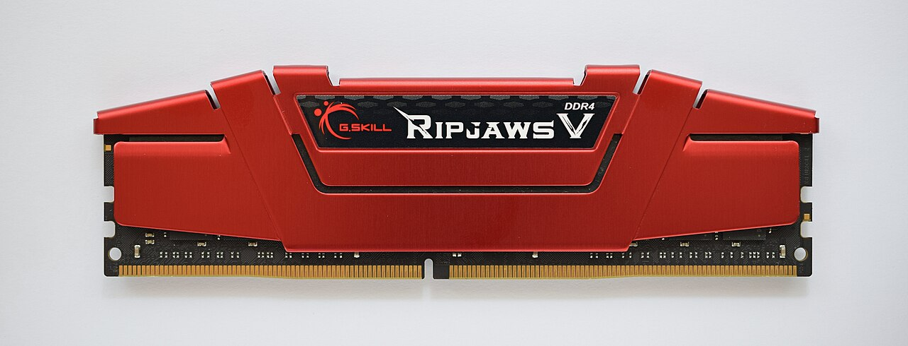
.jpg){kind=link}

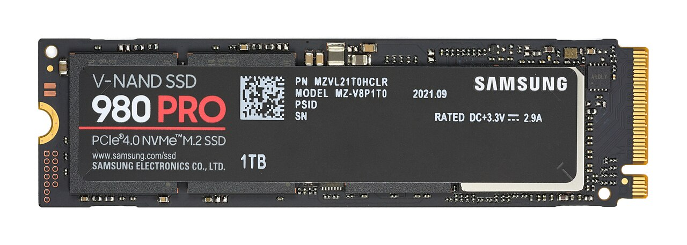


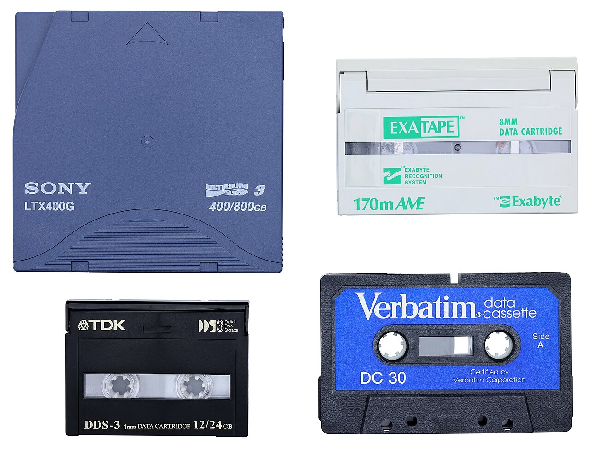

0.5 Kaynak koddan çalışan programa ve boot OSC ch1 sl. 20, 29; ch2 sl. 32–33, 54#
- Kaynak koddan çalışan programa OSC ch2 sl. 32–33:
- Derleyici her kaynak dosyadan yeniden yerleştirilebilir bir object file üretir. Linker bunları ve kütüphaneleri tek bir executable'da birleştirir (Linux'ta ELF, ek bilgi). Executable diskte durur; buna program denir.
- Loader onu belleğe getirir ve çalıştırır. Unix'te bu iş
exec'in içindedir ek bilgi. - Dinamik kütüphaneler (
libc.so) çalışma anında eşlenir. Gerçek adres alanında kütüphane eşlemelerinin olması buradan gelir (sl. 12). - Boot ve kernel'in doğası OSC ch1 sl. 20, 29; ch2 sl. 54: firmware'deki bootstrap kernel'i yükler. Kernel servisleri (daemon) başlatır ve sonra olay güdümlü çalışır (interrupt driven): yalnızca bir interrupt, exception ya da system call geldiğinde çalışır. (Bu bir model. Gerçek kernel'lerde zamanlanan kernel thread'leri de var ve çok çekirdekte kernel başka bir çekirdekte çalışıyor olabilir; ek bilgi.)
0.6 Multiprogramming ve timesharing OSC ch1 sl. 30–31#
- Multiprogramming'de bellekte birden çok iş tutulur; biri I/O beklerken CPU başka işe geçer. Amaç kaynak kullanımıdır.
- Timesharing (multitasking) işler arasında o kadar sık geçer ki kullanıcı her biriyle etkileşebilir. Amaç yanıt süresidir. Bu, Corbató videosunun konusu.


0.7 Unix'te file descriptor ve hata dönüşü#
Ek bilgi; Bölüm 5 ve 7'de kullanılıyor.
- File descriptor: process'in açık dosya tablosundaki küçük bir tamsayı. 0 stdin, 1 stdout, 2 stderr.
- Dosya, terminal ve pipe aynı
read/writearayüzüyle kullanılır. - Shell'de
>bir fd'yi dosyaya,|bir process'in 1'ini ötekinin 0'ına bağlar. - System call'lar hata durumunda çoğunlukla −1 döner ve nedeni
errno'ya yazar;perrorbunu metne çevirir.
Bölüm 0 kontrol soruları (ilk üçünün cevabı soru bankasının D bölümünde):
- Bir disk okumasında veriyi belleğe kim taşır, işin bittiğini CPU'ya kim bildirir, handler'ı kim çalıştırır?
- Bir process'i sürdürmek için neden belleğini kopyalamak gerekmez, PC ve register'ları kaydetmek yeter?
- CPU ve device controller'lar neyi paylaşır, ne için yarışır?
- CPU disk okuması bitene kadar bekleseydi (DMA ve interrupt olmasaydı) waiting durumuna gerek kalır mıydı? Neden?
1. Tazeleme: soyutlamalar, modlar, çekirdeğe giriş sl. 5–9#
1.1 OS'nin işi sl. 6; Okuma §1#
OS üç şey yapar: soyutlama sağlar, kaynakları paylaştırır, korumayı uygular. Soyutlamalar:
- Process: programa bir yürütme bağlamı (execution context) verir.
- Sanal bellek (virtual memory): programa bir adres alanı (address space) verir.
- Dosya ve soket: cihazı doğrudan sürmeden veriye ve iletişime erişim arayüzü sunar.
Sezgi. Okumanın açılış sahnesi şu Okuma §1: bir komut yazıp Enter'a basıyorsun. Program aynı anda bir tarayıcı, bir editör ve arka plan servisleriyle aynı işlemciler, bellek ve cihazlar için yarışıyor. Bazen henüz gelmemiş bir veriye ihtiyaç duyuyor, bazen izni olmayan bir şeyi deniyor. OS bu üç sorunu üç işle çözer:
- Soyutlama: her program kendi sade dünyasını görür ve donanımın ayrıntısını bilmez.
- Paylaştırma (allocation): aynı donanımı isteyen programlar arasında kim, ne zaman, ne kadar alacak, buna karar verir.
- Koruma (protection): bir program ötekini ya da kernel'i bozamaz.
Üçü birbirine bağlıdır. Soyutlama paylaştırmayı gizler; programın "CPU bende" sanması, arkada CPU'nun paylaştırıldığı gerçeğini saklar. Koruma da soyutlamayı güvenilir kılar; adres alanın başkası tarafından değiştirilebilseydi "bellek benim" yanılsamasının değeri kalmazdı.

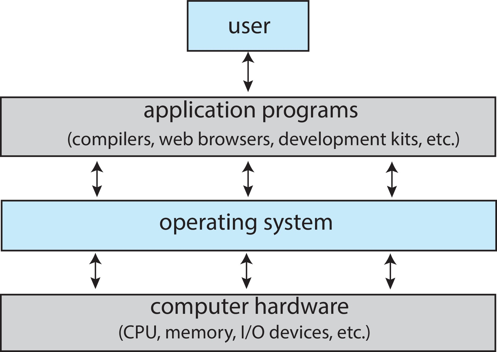
Process: yürütme bağlamı sl. 6, 10, 14#
- Programa verdiği: "Komutlarımı sırayla çalıştıran bir CPU bende ve kesintisiz çalışıyor." Program kendi PC'sini, register'larını ve stack'ini görür. Başka programların varlığından haberi yoktur.
- Gerçekte olan: çekirdek sayısı azdır, process sayısı çoktur. Kernel, timer interrupt ile araya girer. Çalışan process'in bağlamını PCB'ye kaydeder, sıradakini yükler (context switch, Bölüm 4).
- Yanılsamanın sınırı: process duraklatıldığını mantıken fark etmez ve doğru devam eder. Ama geçen süre uzar Okuma §1. Doğruluk korunur, hız korunmaz.
- Linux'ta ek bilgi:
nprocçekirdek sayısını verir,ps -e | wc -lprocess sayısını. Tipik bir makinede ikincisi ilkinin onlarca katıdır.
Sanal bellek: adres alanı sl. 6, 11–12; Okuma §3; OSTEP 13#
- Programa verdiği: "Belleğin tamamı benim." Adres alanında kod, statik veri, heap ve stack bölgeleri bulunur sl. 12. Program bu bölgeleri kendi adresleriyle kullanır.
- Gerçekte olan: tek bir fiziksel RAM var ve bütün process'ler onu paylaşır. Kernel her process için bir sayfa tablosu kurar. Her load ve store işleminde sanal adresi fiziksel adrese MMU donanımı çevirir (ayrıntı Ders 5–6).
- Önemli sonuç: iki process aynı sayısal sanal adresi kullanıp farklı fiziksel belleğe ulaşabilir Okuma §3; OSTEP 13. Bu yüzden iki editör birbirinin değişkenini bozmaz. Kernel salt okunur kod sayfalarını iki process'e ortak verebilir, ama bu yazılabilir değişkenleri ortak yapmaz sl. 11.
- Kernel ne zaman devreye girer: sıradan bir bellek erişimi kernel'e girmez, çeviriyi donanım yapar. Kernel'e yalnız bir exception ile girilir. Bu exception ya page fault'tur (sayfa henüz bellekte değildir) ya da izinsiz erişimdir. İzinsiz erişimde Linux process'e çoğunlukla
SIGSEGVgönderir ek bilgi. - Koruma burada bedavaya gelir: başka bir process'in belleği senin adres alanında yer almaz, yani onu adresleyemezsin bile. Bir pointer'ı başka bir process'e kopyalamak paylaşım kurmaz sl. 13.
- Linux'ta ek bilgi:
cat /proc/self/mapskomutu, onu çalıştırancatprocess'inin adres alanı bölgelerini listeler.
Dosya ve soket: cihaza dokunmadan veri ve iletişim sl. 6; Okuma §1#
- Programa verdiği: dosya, adı olan ve kalıcı bir bayt dizisidir. Program
open,readvewriteçağırır. Hangi sektörde durduğunu, controller'ın hangi register'ına ne yazılacağını, DMA'yı bilmez (Bölüm 0'daki controller fotoğrafı). Soket ise bir iletişim uç noktasıdır. Programsendverecvile konuşur. Ağ çerçevelerini, kaybolan paketin yeniden gönderilmesini kendisi yazmak zorunda kalmaz. Hocanın ifadesiyle: "without requiring an application to implement every network operation itself" Okuma §1. - Gerçekte olan: kernel'deki dosya sistemi baytları disk bloklarına eşler, ağ yığını (TCP/IP) baytları paketlere böler. Driver da controller'ı sürer.
- Kernel'e giriş: her işlem bir system call'dur. Kernel izni bu noktada denetler, örneğin dosyayı açarken okuma ve yazma iznine bakar.
- Ortak arayüz ek bilgi: dosya, pipe, soket ve terminal aynı türden bir tutamaçla (fd) kullanılır. Bu yüzden aynı
readçağrısı hepsinde çalışır; Bölüm 0'daki fd tablosunu hatırla. Linux'tals -l /proc/self/fdaçık fd'leri listeler.
Özet tablo.
| Soyutlama | Programın gördüğü | Gerçekte | Kernel'in aracı | Kernel'e giriş | Ayrıntı |
|---|---|---|---|---|---|
| Process | kesintisiz bir CPU | az çekirdek, çok process | context switch, PCB, scheduler | timer interrupt (ve system call) | Bölüm 2–4, Ders 2 |
| Sanal bellek | kendine ait bütün bir bellek | tek RAM, dağınık sayfalar | sayfa tablosu + MMU | exception (page fault, izinsiz erişim) | Ders 5–6 |
| Dosya · soket | bayt dizisi, iletişim ucu | bloklar, sektörler, çerçeveler | dosya sistemi, ağ yığını, driver | system call | Bölüm 7, Ders 7 |
Paylaştırma ve koruma bu tabloda nerede?
- Paylaştırma orta sütundur. Uygulamalar aynı donanım için yarışırken kernel kaynakları dağıtır sl. 6. CPU zamanını scheduler, bellek sayfalarını bellek yöneticisi, cihaz erişimini I/O alt sistemi dağıtır. Hangi process'in seçileceği politikadır; seçileni çalıştırma yolu mekanizmadır (aşağıda, "İnce ayrımlar"ın üçüncü maddesi).
- Koruma kesikli çerçevedir. Program user mode'da kısıtlı ayrıcalıkla çalışır sl. 7. Donanıma doğrudan dokunamaz, kernel'e yalnız kontrollü yollardan girer sl. 8. Kernel de her istekte "buna izin var mı?" diye sorar.
Tuzaklar.
- "Sanal bellek = diske taşan bellek" demek eksik bir tanımdır. Hocanın tanımında sanal bellek önce bir adres alanı verir. Swap, bu soyutlamanın kullanabildiği bir uygulama tekniğidir ek bilgi, Ders 6.
- "Her bellek erişimi kernel'e girer" yanlıştır. Çeviriyi donanım yapar; kernel yalnız istisnada (exception) devreye girer. Her erişim kernel'e girseydi bilgisayar çalışamayacak kadar yavaş olurdu.
- Soket ağ kartı değildir, fd de dosyanın kendisi değildir. İkisi de process'in kernel'deki bir kayda eriştiği arayüzdür.
İnce ayrımlar.
- Shell kullanıcı alanında (user space) çalışan sıradan bir programdır. Kütüphaneler bazı işleri çekirdeğe girmeden yapabilir ("libraries may do useful work without entering the kernel"); bazı fonksiyonlar ise wrapper olarak kernel servisi ister (sl. 9). Kernel ise ayrıcalıklı çekirdektir. Her tanıdık komuta "işletim sistemi" demek, anlamamız gereken sınırı gizler.
- Soyutlama kaynak sınırını kaldırmaz. Process kendine ait bir CPU'su varmış gibi davranır ama makine fiziksel çekirdek kazanmaz. Duraklamadan sonra program doğru devam eder, ama geçen süre (elapsed time) uzar. Soyutlamanın doğruluğu ile uygulamanın performansı ayrı sorulardır.
- Mekanizma (mechanism) ile politika (policy) farklıdır. Register'ları kaydedip başkasınınkini yüklemek mekanizmadır. Hangi ready görevin CPU'yu alacağı politikadır. Seçim kuralını değiştirmek, kaydedilen register'ların anlamını değiştirmez Okuma §1; OSTEP 4.
Kontrol sorusu K1. Bir program
x = x + 1;satırını çalıştırırken kernel'e girer mi? Aynı programwrite(1, "a", 1)çağırınca girer mi? Her biri için hangi soyutlama ve hangi giriş yolu?Kontrol sorusu K2. İki process aynı anda
0x601040adresine farklı değerler yazıyor ve birbirini bozmuyor. Bunu hangi soyutlama sağlıyor ve hangi donanım parçası uyguluyor?
1.2 User mode / kernel mode sl. 7#
- Uygulama komutları kısıtlı ayrıcalıkla çalışır. Program her donanım işlemini doğrudan yapamaz.
- Donanım bir mode bit tutar (OSC şeklinde user = 1, kernel = 0; hoca değer vermiyor). Bazı komutlar ayrıcalıklıdır (privileged instruction): zamanlayıcıyı (timer) ayarlamak, trap tablosunu kurmak, doğrudan I/O. User mode'da denenirse donanım bir exception üretir ve kernel genelde process'i sonlandırır OSC ch1; OSTEP 6.2.
- System call, çekirdeğe denetimli giriştir (controlled entry). Kernel isteği kontrol eder, sonra hizmet verir.
- Kernel aynı process'e dönebilir. Kernel mode'a girmek, başka bir process'i zamanlamayı gerektirmez sl. 7.
- Root ≠ kernel mode. Root bir kullanıcı kimliğidir ve izin kararlarını etkiler. Kernel mode ise CPU'nun yürütme modudur. Root'un
ls'i de user mode'da çalışır sl. 7; Okuma §2.

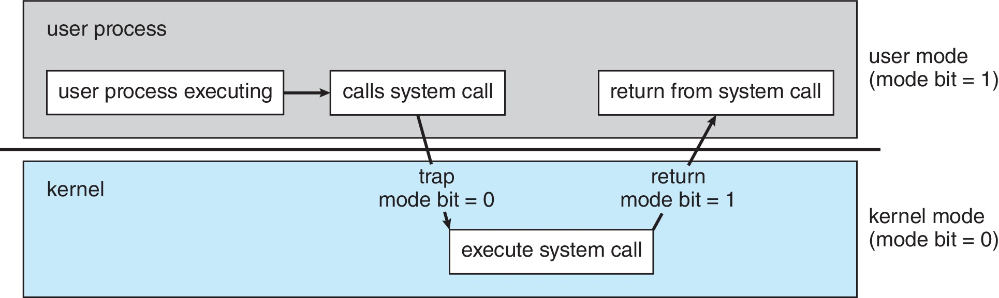
1.3 Çekirdeğe girişin üç nedeni sl. 8; Okuma §2#
| Neden | Tetikleyen | Örnek |
|---|---|---|
| System call | Çalışan program kasıtlı olarak servis ister | read, write, fork |
| Exception | O anki komut bir olay doğurur | page fault, sıfıra bölme OSC ch1 sl. 29 |
| Device interrupt | Donanım, o anki komuttan bağımsız bir olay bildirir | I/O tamamlanması, timer |
- "An interrupt does not necessarily cause a process switch." sl. 8 Handler durumu güncelleyip aynı göreve dönebilir.
- Terimler mimariye göre örtüşebilir. OSC trap ile exception'ı "yazılım kaynaklı kesme" diye tek çatıda toplar. Sınavda terime değil nedene göre sınıflandır.
- Page fault program hatası demek değildir. Kernel eksik eşlemeyi sağlayıp komutu yeniden dener. Sayfayı getirmek bekleme gerektirirse bu arada başka görev çalışabilir. Geçersiz erişim ise başarısızlığa yol açar. "Page fault" tek başına ne programın hatalı olduğunu ne de görev değiştiğini söyler.
1.4 System call yolu ve kütüphane çağrısı sl. 9; OSTEP 6.2; OSC ch2#
Adımlar (kavramsal; komut sırası mimariye bağlıdır):
- Program
read()'i sıradan bir C fonksiyonu gibi çağırır. Bu, libc'deki bir wrapper'dır. - Wrapper argümanları ve system call numarasını anlaşılmış yerlere koyar. OSC'ye göre parametreler register, bellek bloğu ya da stack ile geçer. Modern x86-64 Linux'ta altıya kadar argüman register'la geçer ek bilgi.
- Bir trap komutu ayrıcalığı yükseltir ve kernel'in önceden kurduğu giriş noktasına atlar. Kullanıcı hedef adresi değil yalnızca numarayı seçebilir. Koruma buradan gelir.
- Kernel giriş kodu kullanıcı register'larını kernel stack'ine kaydeder. Bunun ne kadarını donanımın ne kadarını yazılımın yaptığı mimariye bağlıdır: OSTEP'in modelinde donanım iter, x86-64
syscallkomutu ise yığına hiçbir şey itmez ve kaydı giriş kodu yapar (D-04; ek bilgi). - Handler numarayı ve argümanları doğrular. Örneğin kernel bölgesini gösteren bir tampon adresi reddedilir.
- İş yapılır, return-from-trap ile user mode'a dönülür, wrapper sonucu teslim eder.
printf bir kütüphane fonksiyonudur. Kernel'e geçiş yalnızca write wrapper'ındaki trap ile olur ve kullanıcı hedef adresi değil sadece system call numarasını seçebilir (sl. 9; OSTEP 6.2).
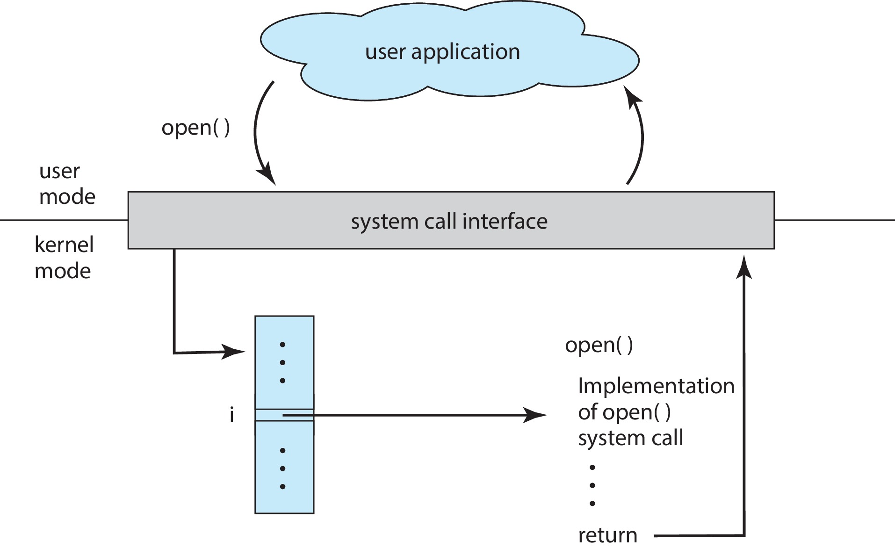
open()'ı çağırır, system call interface user/kernel sınırını geçer, kernel tablodaki i numaralı girdiden open'ın uygulamasını bulur ve sonuçla döner. Kullanıcının seçtiği şey adres değil, i numarasıdır. OSC 10e, Ch.2 slayt 17.Kütüphane çağrısı ≠ system call sl. 9:
- Kütüphane işini tamamen user space'te yapabilir (
strlen,printf'in biçimlendirme kısmı). - Wrapper bir kernel servisi isteyebilir.
- Tamponlu çıktı (buffered output), birkaç
printf'i tek birwrite'ta birleştirebilir. - API adları ile tracer'ın gösterdiği işlemler farklı olabilir. Örnek: macOS libc
printf'tewritedeğil__write_nocancelçağırıyor (çalıştırıldı: macOS).
Linux'ta nasıl görünür ek bilgi:
strace -e trace=write ./progile 3 satırprintf, terminalde 3 ayrıwriteolarak görünür. Çıktı dosyaya ya da pipe'a yönlendirilince tek birwritegörünür. Sebep: glibc stdout'u terminalde satır tamponlu, dosyada ya da pipe'ta tam tamponlu tutar. macOS'ta aynı sayılar ölçüldü.- Tampon, process'in kendi belleğinde duran bir user space verisidir. Bu yüzden fork ile kopyalanır (bkz. §5.6).
1.5 Timer interrupt ve limited direct execution Okuma §2; OSTEP 6#
- "Control must not depend on voluntary cooperation." Hiç system call yapmayan bir döngü, kernel yalnızca istek üzerine kontrol alabilseydi CPU'yu tekeline alırdı.
- Limited direct execution (LDE): program hız için doğrudan CPU'da koşar. Sınır şöyle konur: boot'ta trap tablosu kurulur, timer başlatılır, process user mode'da koşturulur. OSTEP'in iki sorusu: kısıtlı işlemler nasıl yapılır, kontrol nasıl geri alınır?
- Cooperative ve preemptive (non-cooperative) yaklaşım: cooperative sistemlerde sonsuz döngünün tek çaresi reboot'tur. Preemptive sistemlerde timer interrupt kontrolü geri verir.
- Hocanın kilit kelimesi "opportunity". Timer olayı kernel'e muhasebe yapma ve başka görev seçip seçmeyeceğine karar verme fırsatı verir. İki process arasında sırayla geçme emri değildir. Başka runnable iş olmayabilir ya da politika mevcut görevi tutabilir.
Okumanın olay tablosu (ezberlemeye değer):
| Olay | Hemen yapılan iş | Başka görev çalışmak zorunda mı? |
|---|---|---|
| System call, veri hazır | Doğrula ve işle | Hayır, aynı görev dönebilir |
| Bloklayan istek tamamlanamıyor | Beklemeyi kaydet, bu görevi durdur | Başka ready görev çalışabilir; yoksa CPU idle |
| Cihaz tamamlanma bildiriyor | Olayı işle, bekleyen işi güncelle | Hemen dispatch hakkında otomatik sonuç yok |
| Timer olayı | Kontrolü geri al, gerekirse karar ver | Mevcut görev devam edebilir |
Tuzaklar: "printf system call'dır"; "strace sayısı = kaynak koddaki çağrı sayısı"; "her interrupt switch demektir"; "page fault = segfault"; "root = kernel mode"; "kernel hep arka planda çalışan bir process'tir" (user process bir CPU'dayken o CPU'da kernel çalışmaz, ancak trap, exception ya da interrupt ile geri gelir OSTEP 6.3).
2. Program, process, adres alanı, PCB sl. 10–15#
2.1 Program ve process sl. 10–11; Okuma §3#
- Program: pasif bir tarif. Dosyada duran çalıştırılabilir komutlar ve statik veri.
- Process: çalışan bir örnek. Güncel komut konumu, register değerleri, bir adres alanı ve kernel'in kaydettiği kaynakları vardır.
- Aynı executable iki kez çalıştırılırsa iki process olur. Her birinin kendi PID'si, PC'si ve yazılabilir verisi vardır. Biri klavye beklerken öteki dosya kaydediyor olabilir.
- Kernel salt okunur kod sayfalarını fiziksel olarak paylaştırabilir. Bu bir uygulama tercihidir. Değişkenleri paylaşılır yapmaz; ayrım, her process'e sunulan görünüm ve izinlerdedir.
- Bir editör çökünce öteki ölmek zorunda değildir (isolation). Ama ikisi aynı dış dosyaya ya da servise bağımlı olabilir.
- PID var olan bir process'i adlandırır, executable'ın kalıcı adı değildir. PID'ler yeniden kullanılabilir. Kod kimliği, process kimliği ve kaynak kimliği ayrı şeylerdir.
2.2 Adres alanı ve "önce yerleştir, sonra ömrünü açıkla" sl. 12–13#
- Bölgeler: code (text), statik data, heap, stack. Bunlar kavramsal bölgelerdir. Stack aktif çağrıları, heap dinamik ayırmayı destekler.
- Register'lar ve PC bu şemada bir bölge değildir. O anki yürütmeyi tarif ederler.
- Şema temsilidir. Gerçek düzende kütüphaneler, eşlenmiş dosyalar ve guard bölgeleri de vardır. Büyüme yönleri evrensel değildir. Address randomization yerleri çalıştırmadan çalıştırmaya değiştirir. Derleyici bir değeri hiç belleğe koymadan register'da tutabilir.
- Ömür (lifetime): yerel değişkenin ömrü kapsamdan çıkınca biter. Adresini döndürmek ömrünü uzatmaz. Heap nesnesi serbest bırakılana kadar yaşar.
- Pointer bir adres değeridir, sahiplik ya da izin değildir. Bir pointer'ı başka process'e kopyalamak shared memory kurmaz. Aynı sayısal sanal adres iki process'te farklı fiziksel yerleri gösterebilir sl. 13; S-12.
- Bu ayrım bir thread başka bir thread'e pointer verdiğinde OS konusu olur.

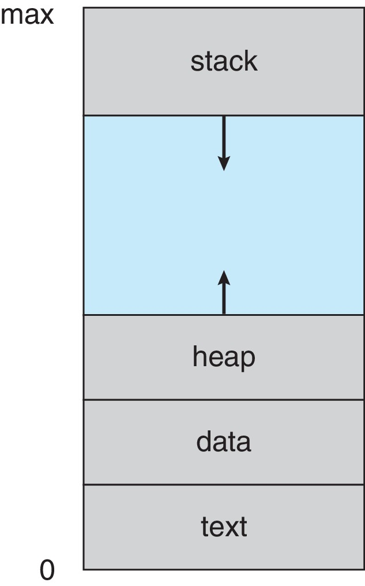
2.3 PCB sl. 14–15#
Kernel'in hatırlaması gerekenler:
- Kimlik ve durum: PID, parent/child ilişkileri, scheduling bilgisi.
- Kaydedilmiş yürütme bağlamı: PC ve register'lar.
- Kaynak referansları: bellek eşlemeleri (memory mappings), açık dosyalar.
OSC buna muhasebe (accounting) ve I/O durumunu da ekler. Linux'taki karşılığı task_struct (pid, state, parent, children, files, mm).

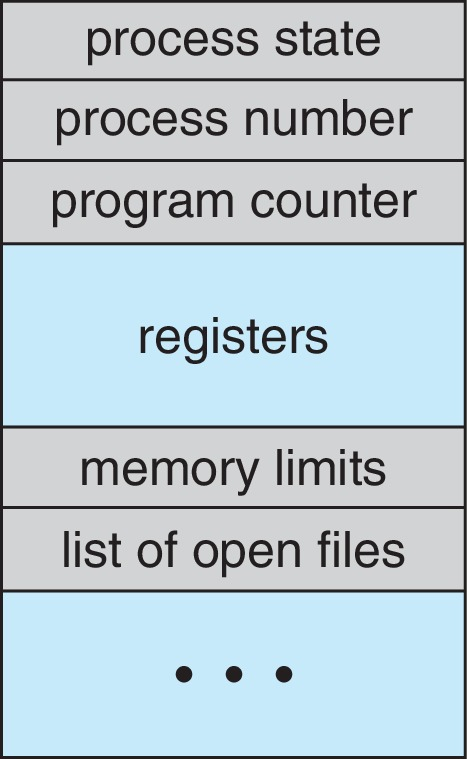
- PCB kavramsal bir özettir. Gerçek kernel'ler bilgiyi birden çok yapıya böler. Thread başına bağlam (per-thread context) ile process çapında paylaşılan kaynaklar ayrılmalıdır.
- "A process record is not a memory snapshot." sl. 15 Devam ettirmek için kaydedilmiş işlemci bağlamı ve kaynaklara referanslar gerekir. Adres alanı eşlemelerle ve bellekteki ya da backing store'daki sayfalarla temsil edilmeye devam eder. Context switch adres alanını PCB'ye kopyalayıp geri yüklemez. Linux'ta
mmalanı adres alanını gösteren bir pointer'dır. - Okumadaki örnek: P kısmi bir toplamı register'da tutarken kesilir. Yalnızca PC'yi geri yüklemek yetmez, çünkü sonraki komut o toplamı kullanabilir.
Tuzaklar: "aynı program, ortak global değişkenler"; "heap yukarı, stack aşağı büyür, her yerde"; "PC adres alanının bir bölgesidir"; "PCB belleğin kopyasıdır".
3. Durumlar, kuyruklar, CPU ve I/O burst'leri sl. 16–21#
3.1 Üç merkezi durum sl. 16–17#
- Running: şu anda bir CPU'da çalışıyor.
- Ready: çalışabilir, seçilmeyi bekliyor. Engeli CPU tahsisi; gecikmesini scheduling politikası etkiler.
- Waiting (blocked): bir olay eksik. Daha fazla CPU zamanı tek başına bloklanmış işlemi tamamlayamaz. Önce eksik olay olmalı.
- Girdi gelince waiting görev normalde ready olur, hemen running olmaz.
- OSC'de beş durum var (new, ready, running, waiting, terminated). Hoca üç merkezi durumu işliyor ve gerçek kernel'lerde daha çok durum olduğunu, genelde thread'lerin (task) zamanlandığını söylüyor. Model bir akıl yürütme aracıdır, Linux iç yapısının dökümü değildir.
- Ready ile waiting'in çareleri farklıdır: daha çok çekirdek almak, uzak sunucunun yanıt süresini kısaltmaz. "Çalışmıyor" eksik bir teşhistir sl. 17; Okuma §4.

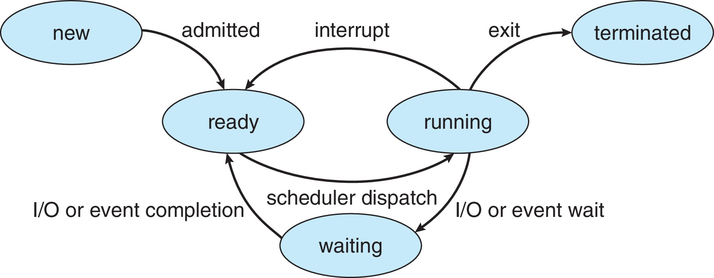
3.2 İzler sl. 18–19#
Tek process: seçilir (ready→running) → mevcut olmayan girdi ister (running→waiting) → girdi gelir (waiting→ready) → yine seçilir (ready→running) → zaman dilimi (time slice) dolar (running→ready; hesap bitmemiş olsa bile).
Slaytın kendi izi sl. 19, tek CPU, "a possible execution order, not a measured trace":
- Zaman 0'da A çalışıyor, B ready.
- A mevcut olmayan disk verisi ister: A waiting olur, B seçilebilir.
- B çalışırken A'nın I/O'su tamamlanır: A ready olur. B bir scheduling kararı A'yı seçene kadar devam edebilir: "I/O completion alone does not prove an immediate switch."
- B klavye girdisi için bloklanır: B waiting olur. A çalışabilir, çünkü önceki bağımlılığı karşılanmıştır.
Okumanın aynı fikirdeki tablosu Okuma §4 (5. adım okumada var, slaytta yok):
| Adım | Olay | A | B |
|---|---|---|---|
| 1 | A hesaplıyor | Running | Ready |
| 2 | A mevcut olmayan girdi ister; B seçilir | Waiting | Running |
| 3 | A'nın girdisi gelir; B şimdilik devam | Ready | Running |
| 4 | B yanıt bekler; A seçilir | Running | Waiting |
| 5 | A, B'nin yanıtı gelmeden biter | Terminated | Waiting |
- Her adımda iki ayrı olgu izlenir: çalışma uygunluğu (eligibility) ve CPU sahipliği (ownership).
- Adım 3 en sık hatanın olduğu yer: A eligible ama CPU'nun sahibi değil.
- Adım 5'te başka runnable iş yoksa CPU'nun idle kalması doğru sonuçtur. Scheduler eksik bir dış bağımlılığı çözemez.
- İz "olası bir sıra"dır, ölçülmüş değildir.
- OSTEP "blocked'tan çıkan process hemen running olabilir" der. Bu da bir scheduler kararıdır; I/O tamamlanması anında geçişi kanıtlamaz.
- Zaman dilimi incelikleri (D-03): sl. 18 "time slice dolar → ready" der. Ama sl. 25 Case C'ye göre başka runnable iş yoksa scheduler P'yi tutabilir. Sınavda birincil cevap sl. 18'deki gibi running → ready'dir. Case C inceliğini ("başka runnable iş yoksa scheduler P'yi tutabilir") yalnızca ek açıklama olarak yaz.
3.3 Kuyruklar ve burst'ler sl. 20–21#
- Ready queue: CPU için yarışan işler. Wait queue'lar: her olaya ya da kaynağa bağlı, çoğul. Olay tamamlanınca iş yürütmeye doğru ilerler. Ready işler arasından seçimi politika yapar.

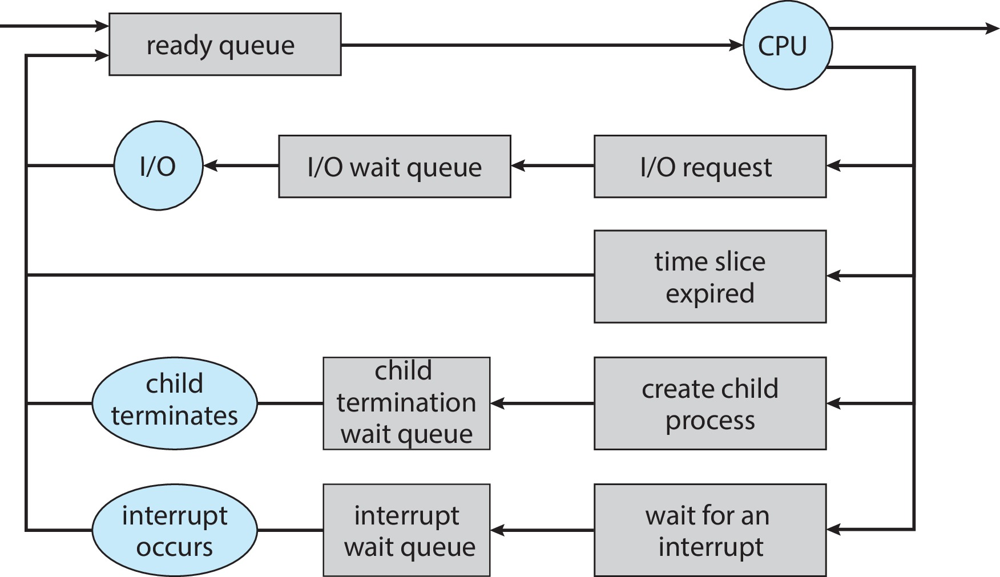
- Yürütme çoğu zaman beklemelerle ayrılmış CPU burst'lerinden oluşur. Tamponlanmış veriyi ayrıştırmak CPU işidir. Gelmemiş girdiyi istemek beklemedir.
- Hocanın tanımı sl. 21: CPU-bound iş yükü zamanının çoğunu ready ya da running geçirir. I/O-bound iş yükü sık sık dış işlemleri bekler (waiting). Aynı uygulama fazdan faza davranış değiştirebilir ("can change behavior across phases").
- CPU-bound ve I/O-bound executable'a yapışık etiketler değildir; iş yüküne ve sisteme göre gözlenen dengedir ("not permanent labels attached to an executable"). Veri önbellekteyse ikinci çalıştırma daha az bekler.
- Biri beklerken başka ready process'in CPU'yu kullanması, multiprogramming'in temel motivasyonudur. Scheduling politikaları ve hocanın tamirci/araba benzetmesi 2. haftada gelecek sl. 21.
1963 Corbató videosu Okuma §15: Hafta 1 için zorunlu izleme ("required viewing"), notlu ödev değil. Okumanın izlerken sorduğu sorular ve kısa cevapları:
- Tek işlemciyi paylaşan birkaç kullanıcı nasıl ilerler? İşlemci aralarında sık geçer; biri beklerken (düşünürken, yazarken, I/O'da) ötekinin işi çalışır.
- Bir programın beklemesi etkileşimli kullanıcıya neden yarar? O bekleme sırasında CPU kullanıcının işine verilir; kullanıcı yanıtı çabuk alır.
- Yanıt süresi (response time) ile işlemci kullanımı (utilization) nasıl farklı hedefleri anlatır? Utilization CPU'nun boş kalmamasını ölçer; response time etkileşimli kullanıcının ne kadar beklediğini. Uzun bir işi kesintisiz koşturmak throughput verir ama terminali yavaşlatır; sık geçiş tersini yapar. Okumaya göre önce hedef tanımlanır ("we first need an objective, such as response time, fairness or total completed work") Okuma §1.
4. Context switch ve "kernel entry ≠ task switch" sl. 22–27#
4.1 Mekanizma sl. 22–23; Okuma §5#
- Giden görevin yürütme bağlamını (PC, register'lar, kernel stack pointer) kaydet.
- Runnable başka bir görev seç ve onun bağlamını geri yükle.
- O görev durduğu yerden devam etsin.
- Görevler farklı adres alanındaysa uygun eşlemeler seçilir. Bu, tüm belleği kopyalamak ya da her önbelleği boşaltmak demek değildir; ayrıntı mimariye ve kernel'e bağlıdır. CR3, ASID/PCID ve TLB ayrıntıları bellek derslerinde gelecek ek bilgi.
- Maliyetin iki bileşeni var: doğrudan kaydet/yükle işi ve dolaylı working set etkisi (cache, adres çevirileri).
- Evrensel bir maliyet sayısı yok. Hocaya göre ilgisiz bir makineden alınan mikrosaniye değeri bizim ortamımızdaki maliyeti belirlemez. İş yükü tanımlanmalı ve ölçülmelidir (D-05). OSC'deki "pure overhead" ifadesi eksik kalır.
- Daha kısa zaman dilimi etkileşimi iyileştirebilir ama geçiş sıklığını artırır. Hocanın cümlesi: "A useful scheduling policy balances responsiveness and fairness against the cost of switching too frequently" sl. 23. Bu ödünleşim Ödev 1'deki RR quantum sorusunun temelidir.
- Aynı process'in iki thread'i arasında geçiş de bağlam değişimidir. Adres alanı aynı kalabilir ama PC, register'lar ve stack değişir Okuma §5. OSC'deki "thread switching lower overhead than context switching" ifadesini buna göre oku.

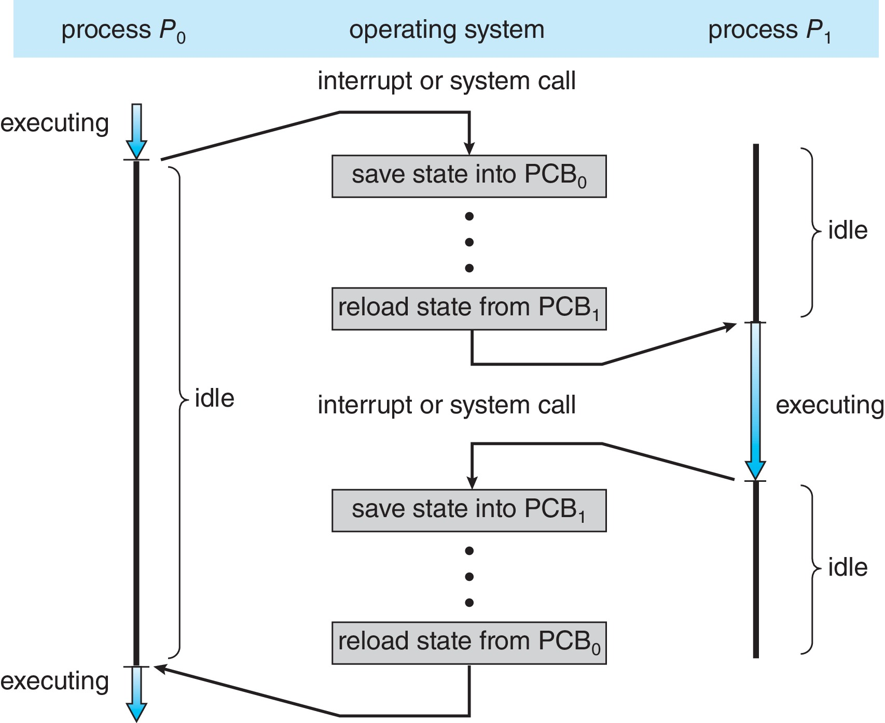
4.2 İki soru sl. 24–25#
"Did privilege change? Did the task change?"
- Case A: P bir servis ister, sonuç hazırdır, kernel P'ye döner. Kernel entry var, task switch yok.
- Case B: P hazır olmayan girdi ister ve bloklanır, Q seçilir. Kernel entry'yi task switch izler, çünkü P artık runnable değil.
- Case C: P çalışırken timer interrupt gelir. Scheduler P'yi tutabilir ya da Q'yu seçebilir. "The interrupt is evidence of an event, not evidence that Q necessarily ran."
Mekanizma düzeyinde fark (OSTEP 6.3, kavramsal):
- Her kernel girişinde kullanıcı register'ları kernel stack'ine kaydedilir. Bu, mod geçişinin parçasıdır.
- Kernel görev değiştirmeye karar verirse,
switchrutini ayrıca giden görevin kernel bağlamını PCB'ye kaydeder, öbür görevinkini yükler ve kernel stack'ini değiştirir. Return-from-trap artık öteki göreve döner. - Bu yüzden mod geçişi görev değişiminden ucuzdur.
- Ters yön: kernel'in zamanladığı görevler arasındaki değişim her zaman bir kernel girişinin içinde gerçekleşir. İstisna, kernel'e girmeden geçiş yapan kullanıcı düzeyi thread kütüphaneleridir (many-to-one; ek bilgi).
4.3 Checkpoint sl. 26–27#
- Ağ yanıtı bekleyen process'e boş bir CPU yardım eder mi? Hayır. Görevin ihtiyacı olay. Runnable olduktan sonra CPU seçimi işe yarar.
- Hemen tamamlanan bir
read'den sonra başka process çalışmak zorunda mı? Hayır. "Kernel execution on behalf of P must not be confused with scheduling a different task." - Aynı anda biten iki program paralelliği kanıtlar mı? Hayır. Tek çekirdek de interleave edebilir.
Cevaplar state, mode ya da CPU ownership terimleriyle verilmeli.
Linux'ta nasıl görünür ek bilgi:
/proc/<pid>/statusiçindevoluntary_ctxt_switches(bloklanma, Case B) venonvoluntary_ctxt_switches(preemption) sayaçları var.vmstat 1çıktısındain(interrupt) vecs(context switch) sütunları ayrıdır. İkisinin farklı olması tam bu ayrımı gösterir.
5. fork / exec / wait, zombie, ps sl. 28–41#
5.1 Üç ayrı işlem sl. 28–29#
| İşlem | Process kimliği | Program image | Amaç |
|---|---|---|---|
| fork | Kendi PID'si olan bir child oluşur | Child kopya bir görünümle başlar | Katılımcı oluşturmak |
| exec ailesi | PID aynı kalır | Başarılı olursa değişir | Başka program çalıştırmak |
| wait/waitpid | Yeni process yok | Değişmez | Bitişi gözlemek, status toplamak |
launch.c'nin zaman çizgisi. exec image'ı değiştirir, PID'yi değiştirmez. Çıktı sırasını waitpid kurar (sl. 33, 35–38).- Shell'ler optimize mekanizmalar (
posix_spawn) kullanabilir; burada anlatılan kavramsal modeldir. - Process tree bir ilişki haritasıdır sl. 29. Parent–child ilişkilerini kaydeder, kimin o anda çalıştığını değil. Bir parent, child'ları çalışırken bekliyor, hesap yapıyor ya da başka iş görüyor olabilir. Bir parent birden çok child yaratabilir, child da kendi torunlarını. Ağaç tek başına iletişim yollarını, paylaşılan veriyi ya da bitiş sırasını göstermez. Kitaptaki PID'ler örnektir; kendi makinende process adları ve soy ağacı shell'e, service manager'a ve ortama bağlıdır.

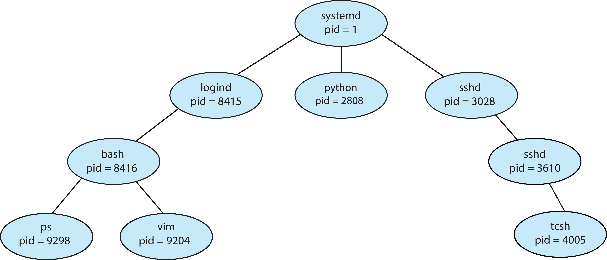
bash'in şu anda çalıştığını, ps ile vim'in konuştuğunu ya da hangisinin önce biteceğini söylemez. OSC 10e, Ch.3 slayt 22.5.2 fork sl. 30–31#
- Başarılı fork'ta (tek thread'li programda) parent child'ın PID'sini (pozitif), child 0 alır. İkisi de çağrıdan sonra devam eder ve
ifdalları ayırır. - Başarısız fork: orijinal process −1 alır, child oluşmaz. Sonucu geçerli bir child kimliği gibi kullanmadan önce hata kontrolü yapılmalı. (Ek bilgi: kontrol edilmeyen −1,
waitpid(-1, …)'de "herhangi bir child" anlamına gelir,kill(-1, …)'de ise izin verilen her process'e sinyal gönderir.) - Sıra garantisi yok. Parent'ın mı child'ın mı önce çalışacağını arayüz vaat etmez. Sıra gerekiyorsa senkronizasyonla kurulur. Sabit bir
sleepkanıt değildir (S-10).
5.3 Copy-on-write ve kalıtılan kaynaklar sl. 32; Okuma §6#
- Fork'tan sonra parent ve child'ın yazılabilir adres alanları mantıksal olarak ayrıdır, başlangıç içerikleri aynıdır. Kernel eşlemeleri, biri yazana kadar aynı fiziksel sayfalara yönlendirebilir. Yazmada özel bir kopya oluşturulur.
- COW, kopyalama semantiğinin bir optimizasyonudur. Shared memory iletişim kanalı değildir. Özellikle child hemen exec yapacaksa kazançlıdır.
x'ini değiştirmez (sl. 32, 60).- Descriptor'lar da kopyalanır (D-02). Child kendi descriptor tablosunu alır, ama kopyalanan descriptor'lar parent'ınkilerle aynı open file description'ı gösterir. Bu yüzden dosya ofseti paylaşılır. Child'da
close(fd)yalnızca child'ın kopyasını kapatır, parent'ınkine dokunmaz. Pipe'ta "her ucu her process'te ayrı ayrı kapat" kuralı buradan gelir. "Fork her şeyi bağımsız kopyalar" fazla geniş bir tariftir.
close ise yalnızca o process'in okunu siler (Okuma §6).- Çok thread'li programda fork ek dikkat ister. POSIX'te child'da yalnızca çağıran thread'in kopyası olur ek bilgi. Exec tüm image'ı değiştirir.
Çalışılmış soru sl. 60; S-1: fork'tan önce x = 10. Child x = 20 yapar. Parent bekler ve kendi x'ini basar → 10. "Waiting orders completion; it does not merge address spaces."
5.4 exec sl. 33–34#
- "Exec changes the program, not the PID." Code, data ve execution stack yeni image ile değişir.
- Başarılı exec eski programa dönmez. Başarısızsa −1 döner ve çağıran hatayı ele almalıdır. Child
/bin/echoolur ama aynı child process olarak kalır. - Açık descriptor'lar close-on-exec işaretli değilse korunur. Shell bu yüzden exec'ten önce child'ın stdout'unu pipe'a bağlayabilir; bu fork ile exec'i ayırmanın gerekçesidir (OSTEP p4.c'de
close(1)+openörneği var). İstenmeyen descriptor kalıtımı aynı sebeple hata doğurur. - Bazı öznitelikler korunur, bazıları sıfırlanır. Korunanlar: PID, PPID, çalışma dizini, umask, sinyal maskesi. Sıfırlananlar: yakalanan sinyallerin handler'ları varsayılana döner, diğer thread'ler ve eski bellek eşlemeleri yok olur (ek bilgi, execve(2)).
5.5 launch.c sl. 35–37#
pid_t child = fork();
if (child == -1) { perror("fork"); return EXIT_FAILURE; }
if (child == 0) { execl("/bin/echo", "echo", "child", (char *)NULL);
perror("execl"); _exit(127); }
do { result = waitpid(child, &status, 0); } while (result == -1 && errno == EINTR);
/* WIFEXITED → WEXITSTATUS; WIFSIGNALED → WTERMSIG */
- Başarılı çıktı:
child, ardındanparent: child exit status = 0. Sırayı waitpid kurar, CPU'yu ilk kimin aldığı değil. (char *)NULL: execl'in değişken argüman listesinin sonu.execl("/bin/echo", "echo", …): ilk argüman çalıştırılacak dosyanın yolu, ikincisi yeni programın göreceğiargv[0](geleneksel olarak programın adı). İkisi ayrı şeylerdir ek bilgi.- Dosyanın başındaki
#define _POSIX_C_SOURCE 200809L,-std=c11ile derlerkenfork,execl,waitpidbildirimlerinin görünmesini sağlar. Olmasa-Werrorderlemeyi düşürebilir ek bilgi. - Sinyal yolu Okuma §6: "distinguish normal exit from termination by a signal": child bir sinyalle öldürülürse (ör. SIGKILL)
WIFEXITEDyanlış,WIFSIGNALEDdoğru olur. Program "exit status" satırını hiç basmaz; stderr'eparent: child terminated by signal 9yazar veEXIT_FAILURE(1) ile çıkar. - EINTR döngüsü: sinyalle kesilen bekleme yeniden denenir ve aynı child beklenmeye devam eder.
- Kodlanmış status, exit code değildir. Önce
WIFEXITEDile normal çıkış mı yoksa sinyalle sonlanma mı olduğu ayrılır. Örneğin_exit(127)sonrası ham status Linux'ta0x7f00olur ek bilgi. - Exec hata yolu sl. 37: Yol var olmayan bir dosya yapılırsa
execl: No such file or directoryveparent: child exit status = 127basılır. Programın çıkış kodu 1'dir (çalıştırıldı: macOS). waitpid başarılıdır; başarısız olan exec'tir. Üç hata ayrı tutulmalı: fork hatası (child yok), exec hatası (child var, image'ını değiştiremedi), wait hatası (child'ı gözleme sorunu). Başarılı wait, child'ın işini başarıyla yaptığını göstermez (S-7). 127 bu örneğin seçtiği bir gelenektir, exec'in dönüş değeri değildir. - Neden
_exit? Hocanın gerekçesi, "in this single-threaded example": kalıtılan stdio tamponlarının fazladan boşaltılmasını önlemek sl. 37.launch.c'de parent fork'tan önce hiçbir şey basmadığı içinexitkullanılsa da çıktı ikilenmezdi; burada_exitsavunma alışkanlığıdır. Gözlem, değiştirilmiş bir programda (fork'tan önceprintfekli): başarısız exec'ten sonra childexit()çağırırsa ve stdout pipe'a bağlıysa, parent'ın tamponda kalmış satırı iki kez basılır (çalıştırıldı: macOS; bkz. Q41). Başarılı exec'te kopya tampon zaten image ile birlikte yok olur.
5.6 stdio tamponu ve fork (ileri, ek bilgi)#
printf("A"); fork(); printf("B\n");terminaldeABveABbasar. "A" fork anında tamponda olduğu için iki process'e de kopyalanır.for (i < 2) { fork(); printf("%d\n", i); }terminalde 6 satır, dosyaya yönlendirildiğinde 8 satır basar.- Ders: tampon çekirdekte değil, process belleğinde durur.
5.7 wait, zombie, orphan sl. 38–39#
- wait iki işe yarar: senkronizasyon ve temizlik. Parent child çalışırken başka iş yapabilir, beklemek zorunda değildir.
- Zombie: sonlanmış ama status'u toplanmamış child. Küçük bir kernel kaydı (PID ve sonlanma bilgisi) kalır. "A zombie is terminated; it is not still executing the program."
- Child'ı arka planda çalıştırmak status'u toplama sorumluluğunu kaldırmaz.
- Orphan farklı bir durumdur: parent'ı çıkmıştır, process çalışıyor olabilir. Unix benzeri sistemler onu yeniden ebeveynler (reparenting) ve sonunda toplar. Sorumlu process ortama bağlıdır: init/systemd ya da bir subreaper ek bilgi. İkisini de yalnızca "çalışmıyor" gözleminden çıkarma.
- OSC'deki "cascading termination" bazı sistemlere özgüdür; Unix çerçevesinde reparenting vardır.
5.8 ps ile gözlem sl. 40–41; Okuma §7#
sleep 20 &
demo_pid=$!
ps -o pid,ppid,stat,comm -p "$demo_pid"
wait "$demo_pid"
- PID gözlenen process'tir. PPID şimdiki parent'tır, reparenting olursa değişir. STAT durum ve bayrakları gösterir. COMM komut adıdır, davranışın açıklaması değildir.
- Linux'ta
Rrunning ya da runnable demektir. Kitaptaki ready/running ayrımını göstermez.Sbir tür beklemedir, hangi cihaz olduğunu söylemez; herSdisk demek değildir. Diğer harfler ek bilgi:Dkesilemez uyku,Zzombie,Tdurdurulmuş,ssession leader,+foreground process grubu,lçok thread'li,Ndüşük öncelik. - Satır yoksa process zaten bitmiş olabilir. Bu bir zamanlama sonucudur, başlatmanın başarısız olduğunu göstermez. Snapshot tek bir anı gösterir, tarihçeyi göstermez.
- macOS notu (çalıştırıldı): zsh
BG_NICEayarı yüzünden arka plan işiSNve nice 5 görünüyor. Harflerin anlamı da farklı: macOS'taI20 saniyeden uzun uyku, Linux'ta boşta kernel thread'i. Ödevler Ubuntu'da.
6. Thread'ler, concurrency, race, join sl. 42–52#
6.1 Thread ne paylaşır? sl. 42–43; Okuma §8#
- Process kaynak ve koruma bağlamıdır. Thread onun içinde bir yürütme akışıdır.
- Her thread'e özel: PC, register durumu, aktif çağrılar için stack.
- Paylaşılan: adres alanı (code, globals, heap) ve birçok process kaynağı, açık dosyalar dahil.
- Ayrı stack'ler koruma sınırı değildir. Bir thread, pointer ile başka bir thread'in canlı stack nesnesine erişebilir (S-5).
| Bir process'in thread'leri | Ayrı process'ler | |
|---|---|---|
| PC ve register'lar | Thread başına ayrı | Ayrı |
| Sanal adres alanı | Paylaşılır | Açıkça kurulmadıkça ayrı |
| İletişim | Ortak nesnelere doğrudan erişim | Açık mekanizma (pipe, shared mapping) |
| Sıradan bellek hatalarına karşı | Otomatik yalıtım yok | Adres alanı yalıtımı doğrudan müdahaleyi sınırlar |
Ödünleşim hata sınırlamadır (fault containment). İletişim kolaylığı için thread seçmek, senkronizasyon ve nesne ömrü sorumluluğunu üstlenmek demektir. Chrome'un çok process'li mimarisi pratik bir örnektir OSC ch3.

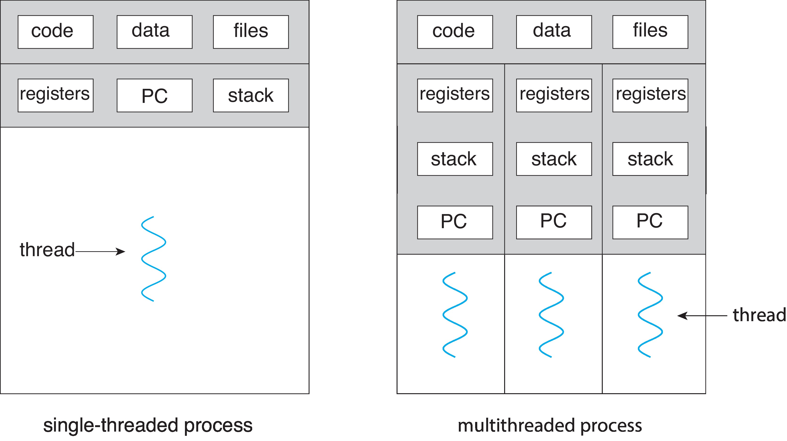
6.2 Concurrency ve parallelism sl. 44–46#
- Concurrency: etkinlikler örtüşen zaman aralıklarında ilerler. Tek çekirdek interleaving ile sağlayabilir.
- Parallelism: etkinlikler farklı çekirdeklerde aynı anda yürür.

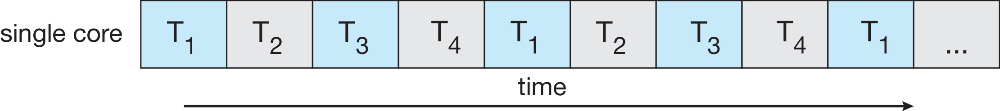

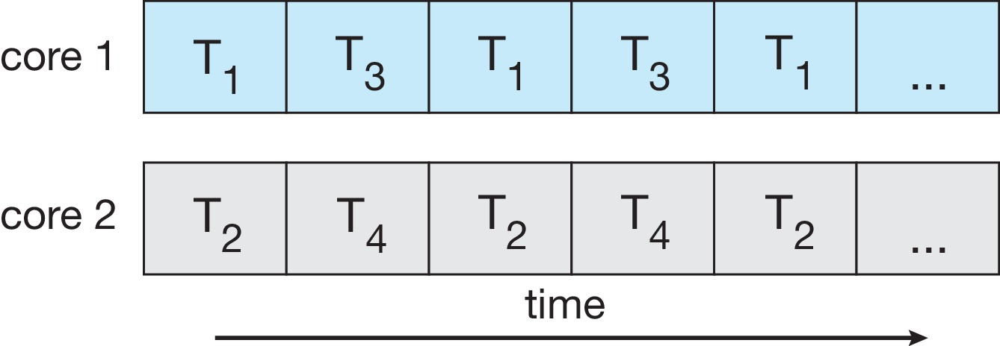
- Tek çekirdek çok adımlı bir işlemi bölünmez (atomic) yapmaz. Paylaşılan veri akıl yürütmesi her iki durumda da interleaving'i hesaba katmalıdır.
- Benzer bitiş süreleri ya da örtüşen ömürler paralelliği kanıtlamaz. Kanıt, aynı koşuda farklı yürütme kaynaklarında eşzamanlı yürütmedir (S-6).
- Fazla thread otomatik hızlanma getirmez. Sınırlayıcılar: seri aşama, oluşturma/scheduling/koordinasyon maliyeti, ortak kilit, bellek bant genişliği, yavaş depolama.
- Okumanın modeli: 2 birim seri iş + 8 birim bölünebilir iş. 1 işçiyle 10 birim, 4 işçiyle 2 + 8/4 = 4 birim sürer. Hızlanma 2,5'tir, 4 değil. Bu bir modeldir, ölçüm değildir. (Amdahl yasası formülü OSC'de var; hoca formül vermiyor.)
- Concurrency hızlanma olmadan da değerlidir: amaç responsiveness olabilir.
6.3 Sunucu ve sınırlı worker pool sl. 47–48#
- Bir akış gelen işi kabul eder, işçiler bağımsız istekleri işler. Bloklanan bir istek diğerlerini durdurmaz. Paylaşılan önbellek ve kuyruklar koordinasyon ister.

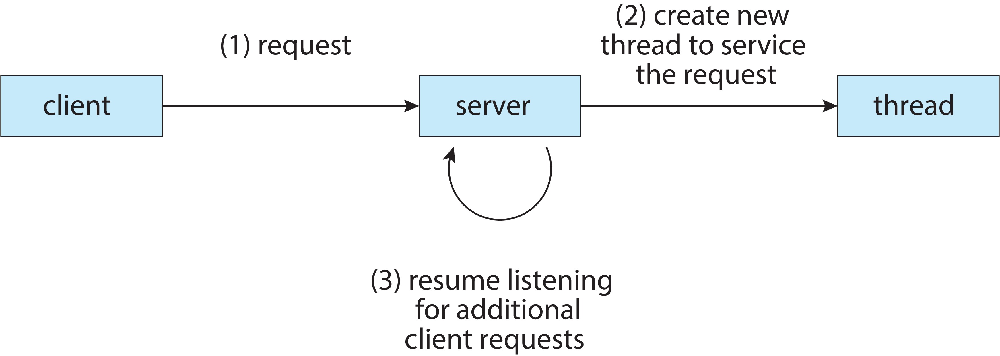
- Sınırlı (bounded) pool: varışı hizmetten ayırır ve aktif akış sayısını sınırlar. Ama şu soruları yine cevaplaman gerekir: her isteğin sahibi kim, kuyruğu kim değiştirebilir, kuyruk dolunca ne olur, kapanışta bekleyen işçiler nasıl uyandırılır? Bir kuyruğu paylaşmak bunları kendiliğinden çözmez.
- Event-driven tasarım da beklemeleri örtüştürmenin bir yoludur. "Her isteğe bir thread" tek seçenek değildir.
6.4 Lost update sl. 49–50; Okuma §9#
Artırma üç adımdır: oku, bir ekle, yaz.
| Adım | A | B | Sayaç |
|---|---|---|---|
| 1 | 0 okur | 0 | |
| 2 | 0 okur | 0 | |
| 3 | 1 yazar | 1 | |
| 4 | 1 yazar | 1 |
- Sorun aritmetik değil, izin verilen interleaving. Çözüm: tüm işlemi korumak ya da atomic bir işlem kullanmak (Ders 3'te).
- Hocanın uyarısı: bu kavramsal bir izdir. C'de senkronize edilmemiş çakışan erişim data race'tir ve undefined behavior olabilir. Yarışlı bir C deneyinden kesin bir sonuç ya da aralık vaat edilemez (D-01).
- Gözlem (vaat değil): 10 çekirdekli bir Mac'te 2 thread × 1.000.000 artırma ≈ 1,0–1,13 milyon verdi. Mutex ya da atomic kullanınca 2.000.000 çıktı. Tek vCPU'lu bir VM'de sonuç çok farklı olabilir.
- Bir bayrakta dönmek (
while (!ready);) de yanlıştır: derleyici ve donanım işlemleri yeniden sıralayabilir. Tek başarılı koşu kanıt değildir Okuma §9.
6.5 thread_join.c sl. 51–52#
main job = {input = 7} hazırlar ve pthread_create(&worker, NULL, square, &job) çağırır. İşçi job->result = 49 yazar. main pthread_join'den sonra okur ve result = 49 basar. Derleme: cc -std=c11 -Wall -Wextra -Werror -pthread.
Neden güvenli ("thread creation and joining provide the synchronization needed for this use" Okuma §9):
- pthread_create da bir senkronizasyon noktasıdır. main'in
input = 7yazması pthread_create'ten önce olur, bu yüzden işçiye görünür. - main sonucu erken okumaz.
- Girdiyi işçi çalışırken değiştirmez.
jobnesnesi işçi bitene kadar yaşar (main'in stack'inde ve main join'den önce dönmüyor).
Ayrıntılar:
- pthread fonksiyonları errno ayarlamaz, hata numarasını döndürür. Bu yüzden kodda
perroryerinestrerror(error)var. - "Joining establishes order, not mutual exclusion." Join tamamlanma noktasını kurar. Eşzamanlı çalışan iki işçinin çakışan erişimlerini korumaz ve sonradan join etmek olmuş bir yarışı onarmaz (S-9).
- Join kaldırılırsa hem tamamlanma garantisi hem güvenli okumanın temeli gider. Üstelik main dönerse tüm process biter.
pthread_join(worker, NULL): ikinci argüman thread'in dönüş değerini alır. Burada NULL, çünkü sonuç dönüş değeriyle değil ortakjobnesnesiyle taşınıyor.
Hafta 1 alışkanlığı Okuma §9: paylaşılan her durum için "name the shared object, identify every participant that can access it, state which accesses can overlap and explain what orders them". Bu alışkanlık Ders 3'te critical section, mutex ve semaphore'un temeli olacak.
7. IPC ve pipe sl. 53–58#
7.1 İki model sl. 53–54#
- Shared memory: process'ler ortak bir bölgeye erişir. Message passing: veri bir iletişim arayüzünden geçer.
- İkisi de anlam, sıra ve sahiplik üzerinde anlaşma ister. Depolamayı paylaşmak senkronizasyon sağlamaz. Paylaşılan bir bayrak bile doğru senkronizasyon ister.
- Message passing arayüzü açık kılar, ama hata işleme, sıralama ve "tam mesaj nerede biter" kuralları yine gerekir.
- Protokol soruları: sınırı ne geçer, kim değiştirebilir, tamamlanma nasıl bildirilir, gönderen durursa alıcı ne yapar?
- Blocking, nonblocking, asenkron Okuma §10; slaytta yok:
- Blocking, anında ilerleme mümkün değilken çağırana olan şeydir: blocking bir receive, veri gelene kadar çağıranı askıya alır (çağıran waiting olur).
- Nonblocking çağrı koşulu beklemeden döner; sonra ne yapılacağına çağıran karar verir (yeniden denemek, başka iş yapmak).
- Asenkron tamamlanma ayrı bir tasarım sorusudur: işi başlatırsın, tamamlandığı sonra bildirilir. Okumanın uyarısı: "do not use 'nonblocking' as a universal synonym for every asynchronous interface."

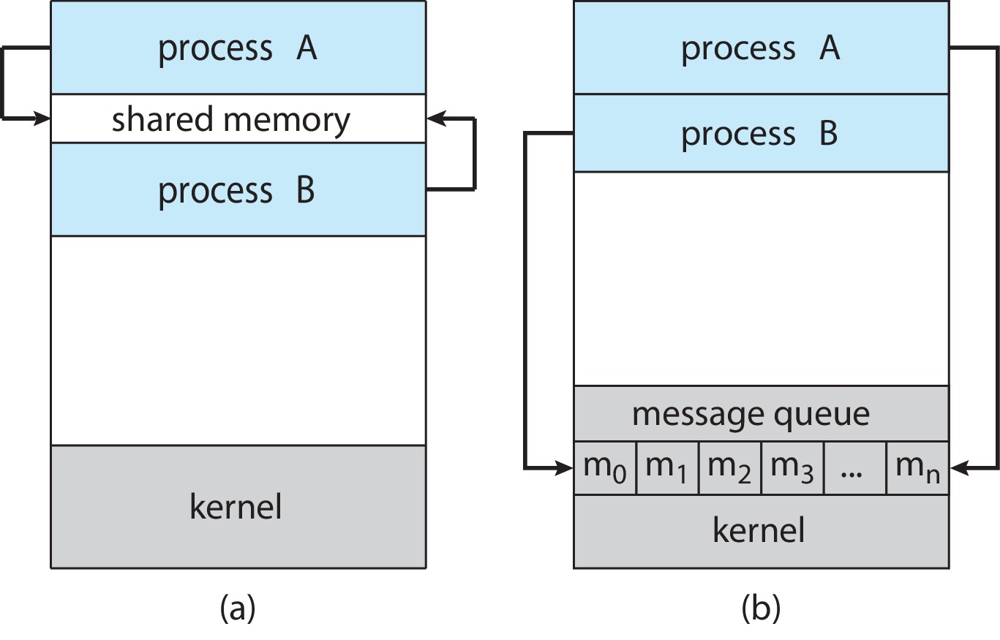
7.2 Pipe sl. 55–56#
printf 'alpha\nbeta\n' | wc -l→ 2 (boşluk biçimi değişebilir; macOS'ta2). Sonuç girdiden gelir (iki newline baytı), scheduling sırasından değil.- Pipe bir bayt akışıdır, uygulama mesaj sınırlarını korumaz. Kayıt alışverişinde framing gerekir: ayraç ya da uzunluk alanı.
printfbir builtin olabilir. Bu yüzden komut metninden kaç dış process oluştuğu kesin çıkarılamaz.fd[0]okuma,fd[1]yazma ucudur. Ordinary pipe tek yönlüdür ve uçları kalıtımla dağıtılır. Sınav cevabı OSC'nin tanımıdır: ordinary pipe parent–child ilişkisi ister OSC ch3 sl. 61. Uçlar kalıtımla dağıldığı için pratikte ortak bir ata yeterlidir:printf | wc'de iki uç kardeş process'tir, ikisini de shell yaratmıştır (D-07; ek bilgi). Named pipe (FIFO) ilişki gerektirmez.

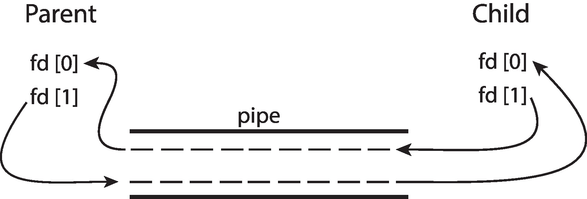
7.3 Blocking ve EOF sl. 57–58; pipe(7)#
- Pipe boş ve hâlâ bir yazar varsa blocking
readbekler. - Hiç yazar kalmadıysa tamponlanmış baytlar okunduktan sonra
readEOF döner (0). - Pipe doluysa blocking yazar bekler.
- Kullanılmayan uçlar kapatılmalı ki tamamlanma gözlenebilsin.
- EOF geçici boşluktan güçlüdür: tamponlanmış veri tükenmiş ve hiçbir write-end referansı kalmamış olmalıdır.
- Simetrik durum (D-08, ek bilgi, pipe(7)): hiç okuyucu kalmadıysa yazar beklemez.
writeSIGPIPE üretir; sinyal yok sayılıyorsa ya da yakalanıyorsa −1/EPIPE döner.yes | head -1bu yüzden kendiliğinden biter.
Backpressure sl. 58; S-11: üretici tüketiciden hızlıysa sonlu tampon dolar. Blocking yazar waiting'dir (yer bekliyor), ready değildir; ona daha çok CPU vermek işe yaramaz. Tüketici hızlıysa tampon boşalır ve tüketici veri bekler; bu geçici boşluk EOF değildir. Bir pipeline'da veri ya da yer bekleyenler ile CPU'ya hazır olanlar bir arada bulunur. Sınırlı tampon dolunca bir politika gerekir: beklemek, reddetmek ya da kontrollü atmak.
8. Uçtan uca sl. 59–64#
8.1 Bir komutun izi sl. 59; Okuma §11#
- Shell (sıradan bir user process) satırı okur. Satır gelene kadar waiting'dir.
- Pipe'ı oluşturur (system call).
- Child'ları fork eder. Her child'da stdin/stdout'u pipe uçlarına bağlar ve kullanılmayan uçları kapatır.
- Child'lar exec ile image'larını değiştirir. Aynı PID kalır, bağlantılar exec'ten sağ çıkar.
- Shell kendi pipe uçlarını kapatır ve child'ları bekler.
- Yürütme sırasında hesap, kernel servisleri (
read,write) ve beklemeler birbirini izler. Scheduler başka ready görevleri araya sokabilir. Bir kernel girişi aynı göreve dönebilir. - Üretici çıkınca write end kapanır. Tüketici kalan baytları okur, EOF görür, sonucu basar ve çıkar.
- Child'lar shell
waitile toplayana kadar zombie'dir. Toplandıktan sonra prompt döner.
8.2 Hocanın kontrol listesi sl. 62#
- Her katılımcı için process kimliğini, program image'ını ve açık iletişim uçlarını yaz. Exec ek katılımcı yaratmaz. Fork, kalıtılmış durumla yeni bir process yaratır.
- Her gecikmede sor: ready mi, waiting mi, ilerlemeyi hangi olay mümkün kılar? Her kernel girişinde ayrıca sor: gerçekten başka görev seçildi mi?
- Tamamlanma hesabını yap: kullanılmayan uçlar kapatılmalı, okuyucular EOF görmeli, child status'ları toplanmalı. Doğru baytları hesaplayan bir program, bu yaşam döngüsü yükümlülükleri atlanırsa yine bitmeyebilir.
8.3 Çalışılmış sorular sl. 60–61#
- x = 10 → child 20 yapar → parent 10 basar (bkz. 5.3).
- Okuyucu neden takıldı? Child yazmayı bitirip ucunu kapattı. Parent bütün baytları okudu ve daha fazlasını bekliyor. Çünkü parent kendi write-end'ini açık tutmuş, bu yüzden EOF gelemez. Kural: "close every unused end in every participating process". Sleep eklemeden önce write-end referanslarını çiz.
fd[1] yüzünden write-end referans sayısı sıfıra inmiyor (sl. 61).Yürütme durmuş görünüyorsa sorulacak soru: eksik olan ne? CPU zamanı mı, bir olay mı, başka bir etkinlikten veri mi, yoksa izin mi?
8.4 Sl. 64 karşıtlıkları (sınav omurgası)#
- Program ↔ process
- Process ↔ thread
- Ready ↔ running ↔ waiting
- Kernel entry ↔ task switch
- fork ↔ exec ↔ wait
- Concurrency ↔ parallelism
- Shared memory ↔ pipe
Ek: Ubuntu'da denenecek küçük deneyler (önce tahmin et, sonra çalıştır; sl. 63)#
Kodlar macOS'ta derlendi. Linux'a özgü sonuçlar "beklenen" diye işaretli ve doğrulanmadı.
launch.cve yolu bozulmuş kopyası: çıktı veecho $?(1 beklenir).strace -e trace=write ./uc_printfile./uc_printf | catkarşılaştırması: 3 write'a karşı 1 write.- Fork sonrası x=10/20: adresler aynı, değerler farklı.
- Zombie: child çıkar, parent 30 saniye uyur.
ps -o pid,ppid,stat,commçıktısındaZ/<defunct>görünür, wait'ten sonra satır kaybolur. - Pipe'ta write ucu açık unutulmuş program: veri gelir ama EOF gelmez, okuyucu takılır.
- Lost update sayacı: sonuç önceden söylenemez (UB). Gözlenen değeri yaz, mutex'li sürümle karşılaştır.
ps -eLfve/proc/<pid>/task/ile thread sayısı./proc/<pid>/statusdosyasındakiThreads:ve*_ctxt_switchesalanları.
Hocanın kendi listesi sl. 63: "These are practice activities; no graded deadline is assigned here."
- Kısa bir arka plan process'ini gözle ve snapshot'ı açıkla:
sleep 20 &sonraps -o pid,ppid,stat,comm -p $!(bkz. §5.8). launch.cvethread_join.c'yi derle ve çalıştır. Önce sonucu tahmin et (child+exit status = 0;result = 49), sonra farkı açıkla.-
- hafta için CPU paylaşımı ya da bekleme üzerine bir soru hazırla.
Kaynaklar sl. 65: OSC 10. baskı, Bölüm 1–4'ten seçilmiş kısımlar. Linux man sayfaları: fork(2), execve(2), waitpid(2), pipe(7). İsteğe bağlı: OSTEP'in process, process API ve thread bölümleri. Çalışılmış cevaplar okuma kitapçığında.